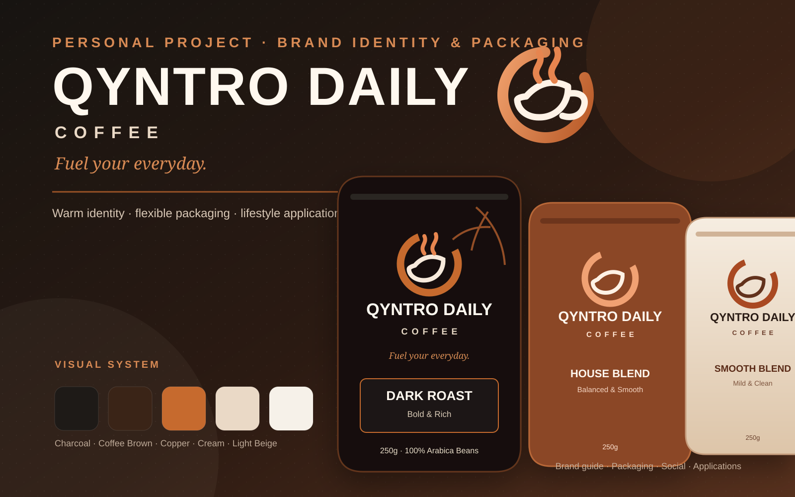

QYNTRO DAILY
COFFEE
The stylized Q direction suggests a coffee cup, rising steam, and the brand initial in one compact visual mark.
A modern coffee brand concept designed around everyday rituals, a warm visual identity, flexible packaging, and premium product presentation. Qyntro Daily is the core brand name, with Coffee used as the descriptor.

This embedded Canva presentation shows the actual project boards: cover, logo variations, visual identity, packaging system, coffee variants, brand applications, social campaign, promotional materials, lifestyle applications, and project summary.
The identity uses earthy coffee-inspired colors, bold typography, and subtle botanical details to create a premium but approachable brand that can stay consistent across packaging, social media, and physical applications.
The stylized Q direction suggests a coffee cup, rising steam, and the brand initial in one compact visual mark.
Charcoal and coffee brown provide the premium base, copper adds warmth and energy, while cream and light beige soften the system for packaging and lifestyle applications.
The pouch system keeps the logo, brand name, descriptor, tagline, blend name, flavor notes, product details, and net weight in a predictable hierarchy so new variants can be added without losing recognition.
Bold & Rich. A strong, full-bodied direction for drinkers who prefer a deeper daily cup.
Balanced & Smooth. A warm, approachable blend built around familiar everyday enjoyment.
Mild & Clean. A lighter, softer profile with a simple and easy coffee experience.
The concept was tested across practical brand touchpoints so the identity feels like a system rather than a single package mockup.
The icon and wordmark are applied at different scales to test visibility, recognition, and a premium everyday-coffee feel.
Warm neutrals, pattern details, and consistent hierarchy extend the visual language into simple promotional materials and loyalty touchpoints.
Product awareness and lifestyle messages use the same brand voice, including “Good Coffee. Bigger Days.”, “Fuel Your Everyday.”, and “Same Great Taste Every Day.”
Create a consistent brand that can stretch from product packaging to everyday customer touchpoints.
People who want a polished but approachable coffee brand that fits work, home, and daily routines.
Logo applications, visual system, three pouch variants, applications, social media, presentation boards, and a music-backed project video.
The portfolio embeds the view-only presentation and keeps the editable collaboration link private.
Position Qyntro Daily as a modern coffee identity centered on everyday rituals, warmth, and premium presentation.
Develop the Q-led mark direction, earthy palette, typography hierarchy, and supporting botanical details.
Test packaging variants, cups, bags, signage, promotional materials, social posts, lifestyle mockups, and the video presentation.
Polish copy, hierarchy, color use, spacing, and the final Canva brand guide before portfolio staging.